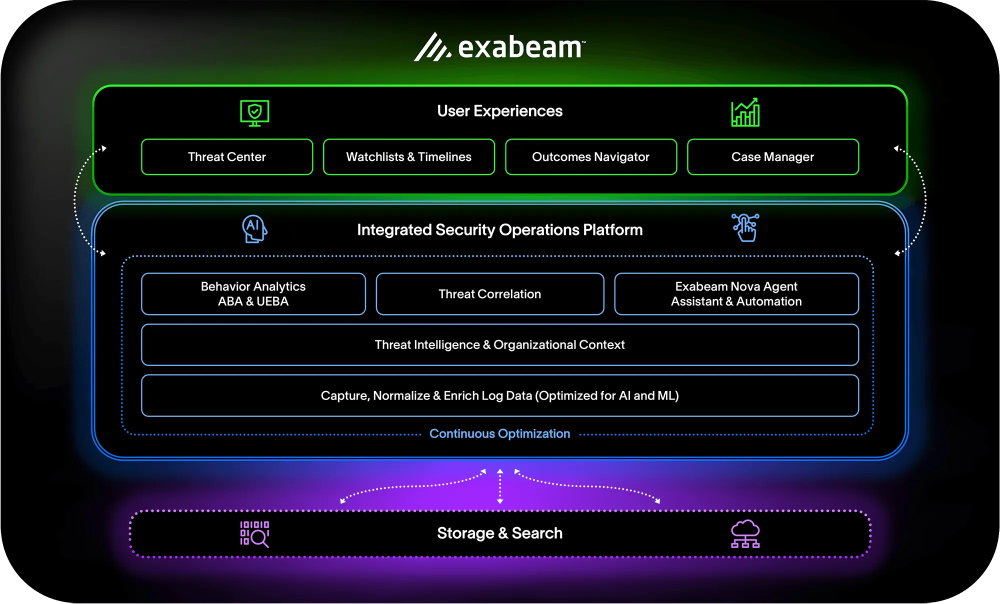

Behavior Intelligence for the Agentic Enterprise
Secure humans and AI agents. Model behavior, correlate context, and accelerate security operations — on an open, vendor-agnostic platform.
AI agents broke the old assumptions about identity
Autonomous agents now act, decide, and access systems like employees — without the guardrails your security stack was built around.
AI agents act like insiders
Agents authenticate, request access, and take action autonomously — creating a new class of insider risk with no historical baseline.
Attack surfaces are fragmenting
Every new agent, copilot, and integration adds another edge to defend — spread across clouds, SaaS, and custom tooling.
Adoption is decentralized
Teams stand up agents independently, outside central visibility — so the SOC finds out about risk after it's already in production.
The agent insider threat kill chain
Here's how a single over-permissioned agent turns into a breach — and where behavior intelligence breaks the chain.
Agent provisioned
A new AI agent or service account is granted credentials and scoped access to complete a task.
Privilege creep
The agent accumulates entitlements beyond its original scope as integrations and permissions expand.
Behavioral drift
Access patterns, timing, and data volume start to deviate from the agent's established baseline.
Agent Behavior Analytics flags the deviation in under a minute — before staging or exfiltration ever happens.
Data staging
Sensitive records are aggregated, copied, or moved in preparation for exfiltration.
Exfiltration & impact
Data leaves the environment or is misused — the incident becomes a breach.
One platform for human and agent behavior
Open and vendor-agnostic — layer behavior intelligence on top of the stack you already run.

Baseline every identity — human or machine
Continuously model normal behavior for users, service accounts, and AI agents, then surface deviations before they become incidents.
- Behavioral baselines for agentic identities
- Peer-group and entitlement context
- Continuous risk scoring, not point-in-time checks
Investigate in minutes, not days
Automated timelines correlate organizational and threat context with behavior, so analysts start from a conclusion instead of a haystack.
- Auto-generated case timelines
- Unified log management at scale
- 5x SOC productivity on average
Respond automatically, everywhere
Turn detections into action with orchestration that spans your identity, cloud, and endpoint tools — no rip-and-replace required.
- Pre-built playbooks for agentic-risk response
- Open integrations, no vendor lock-in
- Works alongside your existing SIEM
Security starts with behavior
One behavior graph for every human and agent identity in your enterprise — continuously scored, always current, fully explainable.
Built for defense-in-depth
Insider threats
Catch risky behavior from trusted accounts before damage is done.
External threats
Detect compromised credentials and lateral movement in real time.
AI attack surfaces
Extend behavior modeling to copilots, agents, and automations.
Compliance
Audit-ready evidence and reporting mapped to your frameworks.
Open architecture
Vendor-agnostic by design — bring your own stack.
Security teams run on behavior intelligence
We cut investigation time from hours to minutes once every identity — human and agent — had a behavior baseline.
Exabeam gave us visibility into agentic activity our old SIEM simply couldn't see. It closed a blind spot we didn't know we had.
Recognized for behavior-based defense
Named in the Gartner Magic Quadrant
See why analysts continue to recognize Exabeam's approach to behavior-based detection and response.
Get the report2026 State of Agentic Risk
Original research on how AI agents are reshaping the insider threat landscape.
Read the reportCommon questions
What is Behavior Intelligence?
It's the practice of continuously modeling normal behavior for every identity — human or AI agent — so security teams can spot meaningful deviations instead of chasing static rules and signatures.
Does this replace my existing SIEM?
No. Exabeam is built to layer on top of your existing stack, or serve as your primary SIEM — the platform is open and vendor-agnostic by design.
How does Exabeam handle AI agent identities?
Agent Behavior Analytics extends the same baselining and risk-scoring used for human users to service accounts and autonomous agents, closing a growing blind spot.
What does onboarding look like?
Most teams see initial detections within the first weeks of deployment, with dedicated support to tune baselines to your environment.
See behavior intelligence in action
Get a personalized walkthrough of how Exabeam models human and agent risk across your environment.